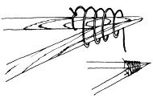

FIGURE 3: Tie end of string to one of the poles and wind toward end of joint. Keep the cord taut and stop about 2/3 of the way out. Then wind back. Finish off by tying the remaining string to the other stick.